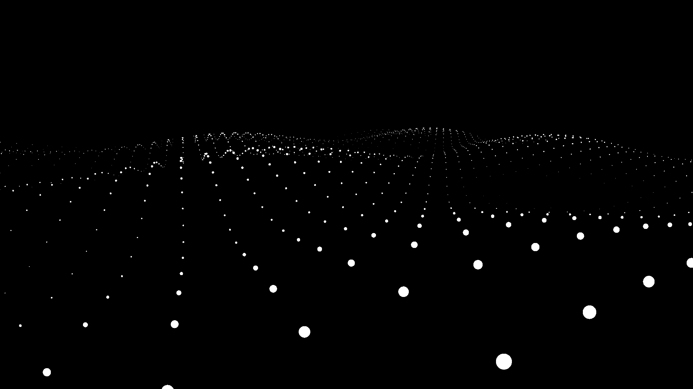

Experiment 2
Geluid visualisatie
Requirements
- Analyse geluid
- Data uit geluid realtime vertalen naar beeld
- Transformaties op basis van geluid uitvoeren in diepte / 3D model
- Minimaal een test met een bollengrid (zie afbeelding 1)

Afbeelding 1 - Point waves THREE example
Nice to have
Stap voor stap...